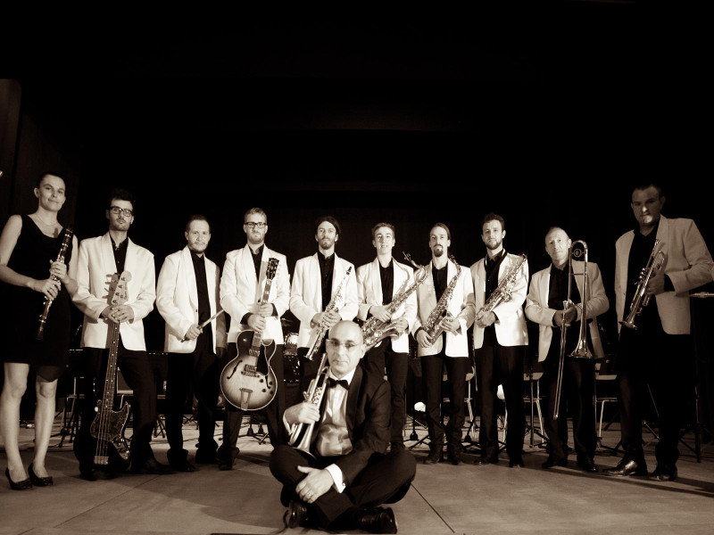
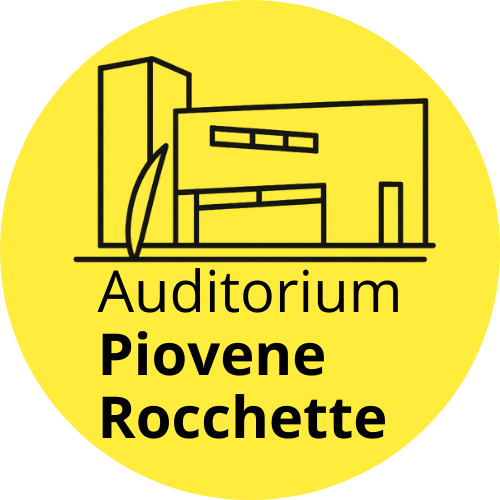

Auditorium Comunale di Piovene Rocchette – Eventi, Teatro, Cinema e Musica per Vicenza e Provincia
L'Auditorium di Piovene Rocchette: un gioiello in provincia di Vicenza
Inaugurato nel 2008, l'Auditorium Comunale di Piovene Rocchette è il cuore pulsante della cultura locale. Offre un ricco programma di eventi per famiglie e bambini, spettacoli teatrali, concerti e cinema a Vicenza e provincia.

A teatro con Il Mascherone (e non solo)
Ogni anno la rassegna teatrale "Il Mascherone" porta in scena commedie divertenti e dialettali, con compagnie venete e non, creando un’esperienza unica per adulti e bambini.
Non solo Mascherone: durante tutto l’anno l’Auditorium ospita spettacoli teatrali di vario genere, eventi culturali e performance musicali per la provincia di Vicenza.
Cinema ogni due Venerdì e ogni due Domeniche
I venerdì sera sono dedicati al cinema d’autore, mentre le domeniche pomeriggio offrono film per bambini e ragazzi a Piovene Rocchette e provincia di Vicenza.
Musica dal vivo all’Auditorium
L'Auditorium di Piovene Rocchette è il punto di riferimento per la musica dal vivo in provincia di Vicenza. Dal Summano Festival, che raduna artisti di diversi generi, ai concerti di band e musicisti come Daniele Groff, Studio3, Simone Patrizi, Ondaradio e Feel, la musica è protagonista tutto l’anno.
Bar dell'Auditorium
Goditi un aperitivo al Auditorium Bar, ideale per rilassarti prima e dopo gli spettacoli. Uno spazio accogliente per famiglie e visitatori da Vicenza e provincia.
Condividi il tuo parere!
Hai suggerimenti sui nostri eventi o film da consigliare? Scrivici a info@pioveneauditorium.it. La tua opinione aiuta a migliorare il programma di eventi dell’Auditorium di Piovene Rocchette per la provincia di Vicenza.